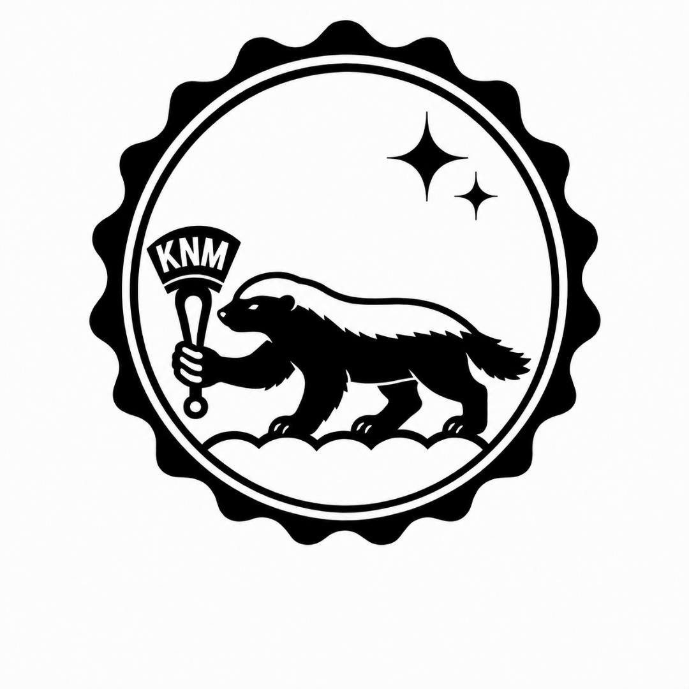

ART / APPAREL / OSAKA
HIPHOPと日本文化を融合させたデザインやアートワークを制作しています。
THE KMIEは、日本文化そのものがサンプリングを繰り返しながら発展してきた文化であると考え、その価値観を作品に落とし込んでいます。
01 / 04
ART.
日本の先住民族であるアイヌ文化をクローズアップし、独自の視点でリメイクした作品です。
グラフィティアートのスプレー技法を取り入れ、祭りの屋台に並ぶりんご飴のような質感に仕上げています。
商売繁盛や家内安全への願いを込めた縁起物として制作しています。


02 / 04

APPAREL.
サンプリングカルチャーをコンセプトに、アパレルや小物、雑貨をデザイン・制作しています。
デザインの元ネタやサンプリングソースを知ることで、作品をより深く楽しんでいただければ幸いです。


03 / 04

DESIGN.
サンプリングという表現手法を用いて、企業・店舗・個人のお客様へアートワークやデザインを制作しています。
「クセになる、忘れられないデザイン」をコンセプトに、一つひとつ丁寧に制作しています。



04 / 04